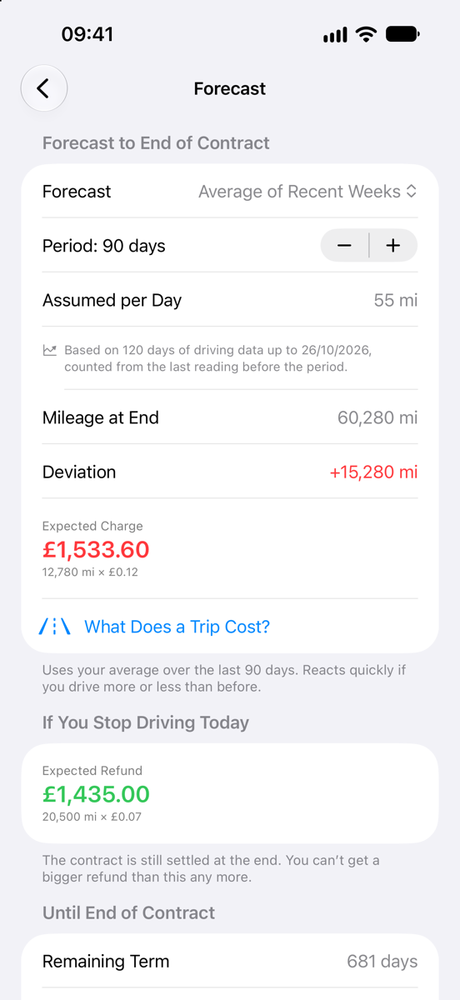
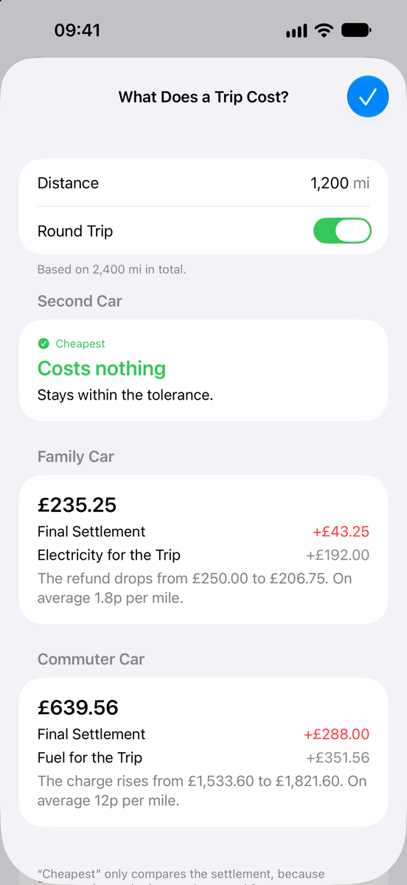
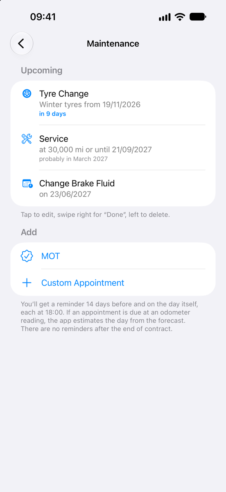
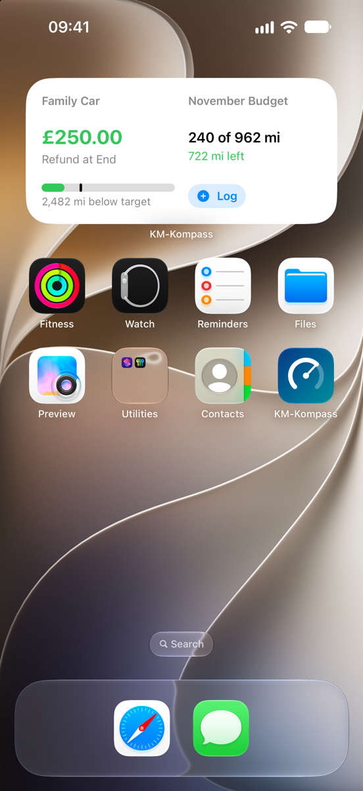
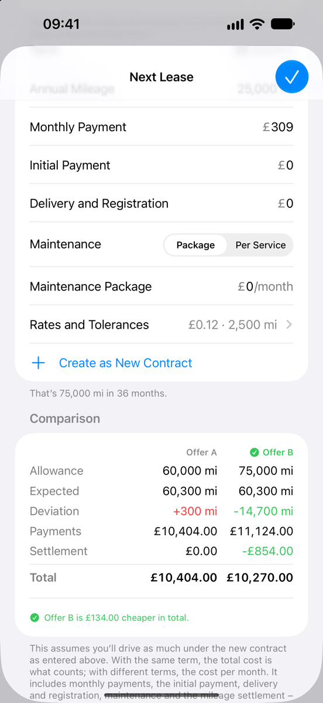
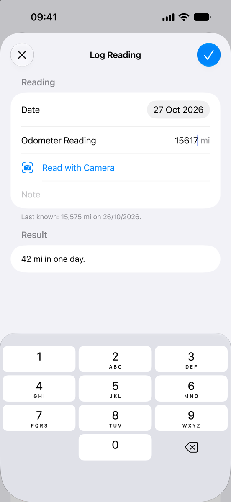
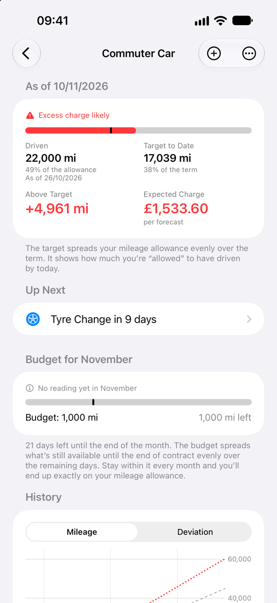

What the app does
With personal contract hire (PCH) or a PCP with a mileage limit, the mileage is settled at the end: excess mileage costs money, and some contracts refund unused mileage. Kilometerkompass shows you along the way where you’re heading.
Analyse
-
Where you stand at a glance
How far you’ve driven, how far you should have driven by today and what that means at the end of the contract: an excess mileage charge or a refund. Under “Driven”, you also see how much of your mileage allowance you’ve used.
-
Forecast to the end of the contract
Based on recent weeks, on the whole contract so far or on your own annual mileage. Plus what you would pay if you didn’t drive any further from today.
-
What does this trip cost?
Enter a distance, such as your holiday drive, and see what it will cost at the end of the contract: a higher excess mileage charge, a lower refund or nothing at all, as long as it stays within the tolerance – plus electricity or fuel for the trip. With several cars, the app shows which one makes the trip cheapest.
-
Monthly budget
How far you can drive this month, how much of that you’ve driven and how much is left – spread so that you end up exactly on your mileage allowance.
-
What does your car really cost?
Enter the monthly payment, initial payment and delivery and registration, plus insurance, vehicle tax, a maintenance package or your own items – monthly, yearly or one-off. From consumption and price, the app also works out electricity or fuel to the end of the contract, in mpg or mi/kWh if you use miles. Money you get back goes in as a credit. The app adds up the total cost over the term, including the expected excess mileage charge or refund, split into lease, energy, maintenance and running costs, per month and per mile or kilometre. Enter what a service cost as you tick it off. The start screen shows the monthly payments of all your cars together.
-
Calculates like your contract
Enter the rates for excess and unused mileage, tolerances and a refund cap just as they appear in your contract. Once the contract has ended, the app shows the final settlement.
-
History and readings
A chart shows distance driven, target and forecast over the term. Readings are listed by month, with the distance driven in each month.
Log
-
Odometer reading by camera
Point the camera at the odometer and tap the reading – or choose an existing photo; the reading then takes the date the photo was taken. The image is analysed on your iPhone only.
-
One tap from the start screen
“Log Odometer Reading” is at the bottom of the app’s start screen. For a particular contract, just swipe right on its row.
-
Siri and Shortcuts
“Log Odometer Reading” works with Siri, Spotlight and the Shortcuts app – just say “Log odometer reading in Kilometerkompass”. The reading is saved without opening the app. You’ll also find the command in the app icon’s menu.
-
Reminders
For your next reading, at the interval you choose, and if you like, four weeks before the end of the contract.
-
Widgets
Where you stand on the Home Screen and Lock Screen, without opening the app. Plus a “Log Odometer Reading” control for Control Centre and the Action button.
Manage
-
As many contracts as you like
Each contract has its own detail page, and an overview brings them all together.
-
Maintenance under control
Service, tyre change, MOT and your own appointments – by date, by odometer reading or both. For an odometer reading, the app estimates from your driving when it will be due and reminds you two weeks before. Once you mark one “Done”, the next appointment is already scheduled.
-
Return checklist
What to do three months, four weeks and one week before the return, on the day and afterwards – with the dates that follow from the end of your contract. You can add your own items. More in our guide to returning your lease car.
-
Plan your next lease
The app shows how far you really drive each year and which mileage allowance suits it. Enter two offers and see which one ends up cheaper: monthly payments, initial payment, delivery and maintenance plus the expected excess mileage charge or refund. Turn the offer you choose into your new contract with one tap.
-
A contract as a template
Your next contract takes over the term, rates, tolerances and reminders from the old one – you only enter what has changed.
-
Sync via iCloud
Contracts and readings are stored in your private iCloud, so they come with you to a new iPhone too.
-
App lock
If you like, with Face ID, Touch ID or your device passcode. Lock Screen widgets then show no figures.
-
Export
Readings as a spreadsheet (CSV) and today’s position as a report – to share or to keep.
-
No account, no ads, no tracking
Your data stays with you. The app’s developer doesn’t see it. More in the privacy policy.
Price
Try it first, then buy it once.
- No subscription
- No ads
- £3.99 one-off
-
7-day free trial
Every feature, without restriction. The trial ends by itself, and it costs you nothing.
-
Then a one-off £3.99
A one-off in-app purchase unlocks the full version – for good and on all your devices with your Apple Account. In Ireland it costs €4.99.
-
Without a purchase
Your contracts and readings stay visible and can still be exported. You can still read the return checklist, costs and maintenance appointments. New readings, new contracts, “What Does a Trip Cost?”, “Plan Next Lease”, ticking off the checklist and scheduling maintenance need the full version.
£3.99 is the price in the UK and €4.99 in Ireland; in other countries, the app shows you the local price before you buy. If you’ve already bought it, you can get the full version back on another device with “Restore Purchases” in the app’s Settings.

Questions and answers
How does the free trial work?
For 7 days, you can use every feature without restriction. When the trial starts, the app makes a free purchase through the App Store – nothing is charged and no subscription begins.
Apple records the date with your Apple Account. That’s why the trial runs the same on all your devices and doesn’t start again if you reinstall the app.
What happens when the free trial ends?
Nothing that costs you money. Your contracts and readings stay visible, and you can still export them. To add new readings or contracts, work out trips and plan your next lease, you need the full version: a one-off in-app purchase of £3.99 in the UK or €4.99 in Ireland.
How do I get the full version on a new iPhone?
The purchase applies to all your devices with your Apple Account. Sign in on the new device with the same Apple Account and tap “Restore Purchases” in the app’s Settings. You won’t be charged.
How do I get my data onto another device?
Through iCloud. If your devices are signed in with the same Apple Account and iCloud is turned on for Kilometerkompass, the app syncs contracts and readings by itself – including when you move to a new iPhone.
The data stays in your private iCloud; the app’s developer has no access to it. Without iCloud, it stays on the device only.
How do I export my data?
Open a contract and scroll down to “Share”. “Readings as Spreadsheet” creates a CSV file with all your readings that you can open in Numbers or Excel, for example. “Report as Text” sums up where you stand today.
You choose where the file goes in the share sheet. This also works after the free trial, without a purchase.
How do I delete my data?
To delete a reading, swipe left on it in the list. You delete a contract with all its readings the same way on the app’s start screen, or by touching and holding its row. With iCloud, it then disappears from your other devices too.
To remove everything, delete the app and its copy in iCloud: Settings → your name → iCloud → Manage Account Storage → KM-Kompass.
Does the camera always read the odometer correctly?
Not always – that’s why the app only takes the number you tap. It ignores the trip meter, range, time and temperature as far as it can. Check the value before saving; if need be, just type it in.
Does Kilometerkompass work with my PCH or PCP?
Kilometerkompass works with any contract that sets a mileage allowance, such as personal contract hire (PCH), business contract hire or a PCP with a mileage limit. You enter the mileage allowance, the excess mileage rate and, if your contract has them, the tolerance, the refund for unused mileage and its cap, just as they appear in your contract.
Miles or kilometres, pounds or euros?
Kilometerkompass shows distances in miles or kilometres and amounts in pounds, euros or Swiss francs. You choose them in the app’s Settings under “Display”, with “Distance” and “Currency”. Nothing is converted – only the symbols change.
The app presets them by region: miles and pounds in the UK, kilometres and euros in Ireland. With miles, you enter consumption in mpg (UK gallons) or mi/kWh.
What if I keep the car at the end of my PCP?
If you make the optional final payment and keep the car, you don’t hand it back, so there’s usually no excess mileage charge. The forecast still helps you decide in good time: it shows what handing the car back would cost.
What if I can adjust my mileage allowance during the contract?
Some leasing companies let you change the mileage allowance during the contract. The forecast tells you in good time what the excess mileage would cost at the end, so you can compare it with what your leasing company charges for the adjustment.
Are the amounts guaranteed?
No. Kilometerkompass calculates with the details you copy from your contract and with your readings. A forecast is an estimate based on how far you’ve driven so far. Other return costs, such as for damage, aren’t included.
All information is provided without guarantee – your leasing company’s statement always takes precedence.
Can the app’s developer see my data?
No. The app doesn’t send any data to the developer, and there’s no account and no tracking. You’ll find the details in the privacy policy.
Which devices does Kilometerkompass run on?
On iPhone with iOS 18 or later.
Calculator and guide
Work it out straight away, or read up on how the mileage is settled when your lease ends.
-
Lease mileage calculator
Enter your contract details and odometer reading and see straight away whether you’re above target and what it will cost at the end – right in your browser.
-
Returning your lease car
What to check before a PCH or PCP car goes back and how the excess mileage charge is worked out – with a checklist.
Contact
A question, a bug or an idea for the next version? Write to

If something goes wrong, a short description of what you did and what happened helps a lot – with a screenshot if you can.